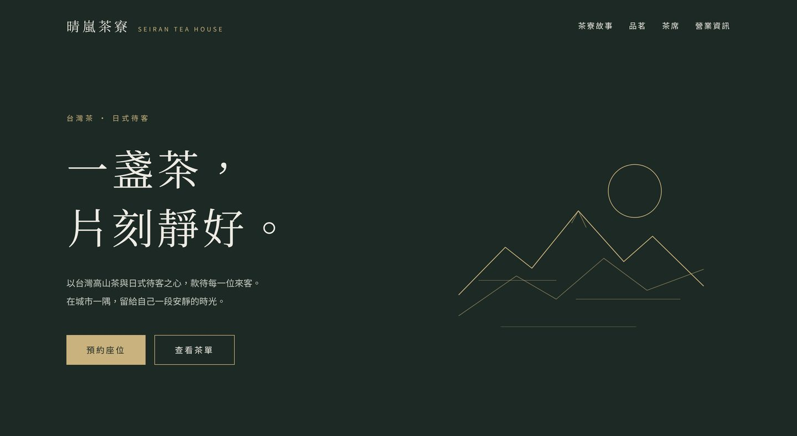

WEB DESIGN SAMPLES
網站製作 作例集
以下是網站製作的範例。點選即可實際瀏覽，電腦與手機都會自動調整成合適的版面。

店鋪網站 ・ 茶館
晴嵐茶寮
以台灣茶與日式待客為主題，沉穩、有質感的一頁式店鋪網站。
- 電腦／手機自動切換
- 一頁式
- 虛構店家
瀏覽網站 →
可承接的網站
企業官網、店鋪網站，也可製作日文版頁面。
洽詢方式
製作流程與費用，請參考介紹資料，或直接聯絡介紹人。
WEB DESIGN SAMPLES
以下是網站製作的範例。點選即可實際瀏覽，電腦與手機都會自動調整成合適的版面。

店鋪網站 ・ 茶館
以台灣茶與日式待客為主題，沉穩、有質感的一頁式店鋪網站。
瀏覽網站 →
企業官網、店鋪網站，也可製作日文版頁面。
製作流程與費用，請參考介紹資料，或直接聯絡介紹人。